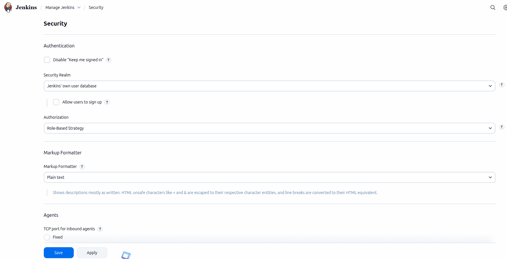
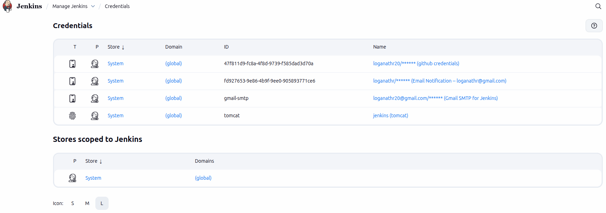

Jenkins Security Best Practices
Following security best practices helps protect your Jenkins environment from unauthorized access, data leaks, and malicious attacks. These practices are essential for both small teams and enterprise-scale CI/CD systems.
- Always enable authentication – Never run Jenkins in anonymous mode.
- Use strong passwords or SSO for all users.
- Apply role-based permissions instead of giving everyone admin access.
- Secure credentials using Jenkins Credentials Manager.
- Restrict job configuration access to trusted users only.
- Disable unused plugins to reduce attack surface.
- Keep Jenkins updated with the latest security patches.
- Enable CSRF protection and script security.
- Audit logs regularly for suspicious activity.
These simple steps significantly improve the security posture of your Jenkins environment and reduce the risk of misconfiguration.
Production Jenkins Hardening Guide
Hardening Jenkins for production means applying additional security controls beyond the default configuration. This ensures your CI/CD pipelines remain reliable, secure, and compliant with enterprise standards.
System-Level Hardening
- Run Jenkins behind a reverse proxy (Nginx/Apache).
- Enable HTTPS with valid SSL certificates.
- Restrict SSH access to trusted IP addresses.
- Use firewall rules to limit exposed ports.
Jenkins Configuration Hardening
- Disable anonymous access.
- Restrict script approvals.
- Use read-only views for observers.
- Enable agent-to-controller security.
Pipeline Security
- Avoid hardcoding secrets in Jenkinsfiles.
- Use credentials bindings for sensitive data.
- Limit who can edit production pipelines.
A hardened Jenkins environment reduces operational risks and ensures your CI/CD system is secure, stable, and compliant.
Role-Based Access Control (RBAC) in Jenkins
Role-Based Access Control allows administrators to define what each user can do inside Jenkins. Instead of assigning permissions individually, users are grouped into roles such as Admin, Developer, or Viewer.
Common Jenkins Roles
- Admin – Full system access.
- Developer – Build and configure jobs.
- Viewer – Read-only access.
- Release Manager – Deploy to production.
How to Enable RBAC
- Install the "Role-Based Authorization Strategy" plugin.
- Go to Manage Jenkins → Configure Global Security.
- Select "Role-Based Strategy".
- Define roles and permissions.
- Assign users to roles.
RBAC improves security by ensuring users only have access to what they need.
Insert "Available Plugins" Screenshot

Jenkins Credentials Management
Jenkins provides a secure way to store and manage sensitive information such as passwords, API tokens, SSH keys, and certificates.
Supported Credential Types
- Username & Password
- SSH Private Keys
- Secret Text (API tokens)
- Certificates
Best Practices
- Never hardcode secrets in Jenkinsfiles.
- Use credential bindings in pipelines.
- Limit credential access by role.
- Rotate secrets regularly.
Proper credential management protects your infrastructure, source code, and deployment systems from unauthorized access.
Insert "Available Plugins" Screenshot
